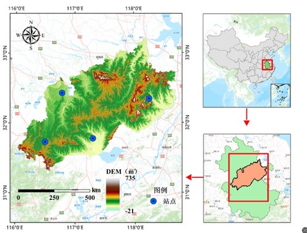
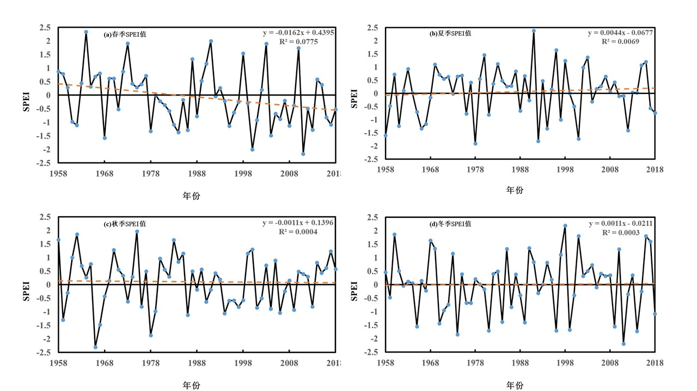
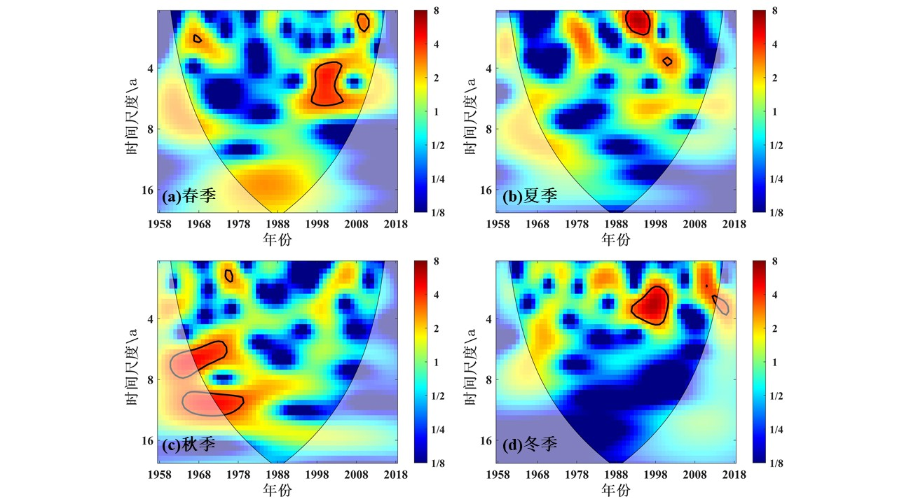
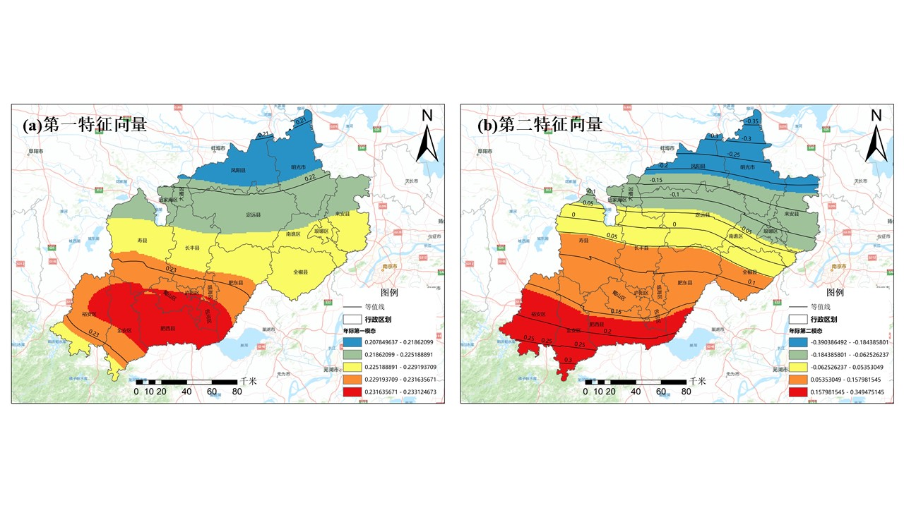

Timeline: 01.2021 - 05.2021 时间：2021年1月 - 2021年5月
Drought is a common global disaster caused by an imbalance in water supply and demand, leading to relative water loss. It is one of the major disasters causing severe economic losses worldwide. Due to its high frequency, long duration, wide impact area, and large affected regions, drought has become a significant constraint on economic development and social progress in China and globally. In recent years, global climate change has led to frequent drought events. The identification and characterization of droughts in arid regions still face severe challenges due to the diversity of its definition, spatio-temporal specificity, complex physical processes, and incomplete unstructured data. This study, based on spatio-temporal analysis methods in Geographic Information Systems (GIS) and global SPEI raster data combined with ground-measured monthly temperature and precipitation data from 1958-2018, derives multi-scale SPEI for the Jianghuai Watershed. Using methods like wavelet analysis, EOF, and M-K tests, this research deeply explores the spatio-temporal evolution of meteorological drought and its future trends in the Jianghuai Watershed, providing scientific reference for agricultural production, disaster prevention, and drought mitigation in the region, which holds significant practical importance.干旱是目前全球普遍发生的一种灾害，是由于水分供求或水分的收支不平衡而造成水量相对亏损的一种现象，同时干旱灾害也是造成世界上严重经济损失的重大灾害之一。由于干旱具有发生率高、持续期长、影响区域覆盖面广、受灾地区面积较大等特征，已经成为制约我国乃至世界经济发展与社会进步的重要灾害之一。近年来，由于全球气候变暖所引起的全球气候和环境都在发生变化，世界上干旱灾害事件频发；由于受其自身定义的多样性、时空的变化特殊性、复杂的物理过程和不完整的非结构化等因素的影响，干燥地区的自然灾害识别与表征依旧面临着严峻的挑战。本文以地理信息系统（GIS)中的时空分析方法为研究基础，基于全球SPEI栅格数据，结合1958-2018年地面气象站点实测逐月气温和降水数据，得到江淮分水岭地区多尺度SPEI指数，基于该干旱指数，采用小波分析、EOF、M-K检验等方法进行深度探究，从而对江淮分水岭区内气象干旱时空演变及其未来趋势开展研究，为该地区农业生产生活、防灾防旱等提供科学的参考科学，具有非常重要的现实意义。
The main objectives of this study are: (1) To analyze the temporal evolution characteristics of drought in the Jianghuai Watershed from 1958 to 2018 using multi-scale SPEI, including trend analysis, abrupt change detection, and periodicity. (2) To investigate the spatial evolution patterns of drought across the Jianghuai Watershed using EOF analysis for both interannual and seasonal scales. (3) To assess the persistence of drought trends in the region using R/S analysis. (4) To explore the response of drought in the Jianghuai Watershed to ENSO (El Niño–Southern Oscillation) indices using cross-wavelet and wavelet coherence analysis.本研究的主要目标包括：(1) 利用多尺度SPEI分析1958-2018年江淮分水岭地区干旱的时间演变特征，包括趋势分析、突变检测和周期性分析。(2) 利用EOF分析方法研究江淮分水岭地区年际和季节尺度干旱的空间演变格局。(3) 利用R/S分析评估该地区干旱趋势的持续性。(4) 利用交叉小波和小波相干分析，探究江淮分水岭地区干旱对ENSO（厄尔尼诺-南方涛动）指数的响应。
This study employed several methods: (1) Calculation of the Standardized Precipitation Evapotranspiration Index (SPEI) at multiple time scales (1, 3, 12, 24 months) using temperature and precipitation data. (2) Quantitative drought characterization based on SPEI values. (3) Mann-Kendall (M-K) non-parametric test for trend and abrupt change detection. (4) Wavelet analysis (Continuous Wavelet Transform, Cross Wavelet Transform, Wavelet Coherence) to identify periodicities and correlations. (5) Empirical Orthogonal Function (EOF) decomposition for spatial pattern analysis. (6) R/S analysis for assessing future trend persistence. The overall technical workflow is illustrated below.本研究采用了多种方法：(1) 利用气温和降水数据计算多时间尺度（1、3、12、24个月）的标准化降水蒸散指数（SPEI）。(2) 基于SPEI值进行干旱定量表征。(3) 采用Mann-Kendall (M-K)非参数检验法进行趋势和突变检测。(4) 采用小波分析（连续小波变换、交叉小波变换、小波相干）识别周期性及相关性。(5) 采用经验正交函数（EOF）分解进行空间格局分析。(6) 采用R/S分析评估未来趋势的持续性。详细的技术流程如下图所示。

Figure 1: Study area of the Jianghuai Watershed.图1：江淮分水岭地区研究区划图。
The study analyzed SPEI at various time scales (1, 3, 12, 24 months). Shorter scales (SPEI-1, SPEI-3) reflect short-term meteorological and agricultural drought, while longer scales (SPEI-12, SPEI-24) reflect hydrological drought. The interannual SPEI (SPEI-12) showed a decreasing trend (0.0032/a), indicating an intensification of drought. Seasonal SPEI showed decreasing trends in spring and autumn, and slight increasing trends in summer and winter.研究分析了不同时间尺度（1、3、12、24个月）的SPEI。较短尺度（SPEI-1, SPEI-3）反映短期气象和农业干旱，而较长尺度（SPEI-12, SPEI-24）反映水文干旱。年际SPEI (SPEI-12) 呈下降趋势 (0.0032/a)，表明干旱加剧。季节SPEI在春季和秋季呈下降趋势，夏季和冬季呈轻微上升趋势。

Figure 2: SPEI changes at different time scales (1958-2018).图2：1958-2018年不同时间尺度SPEI变化。
The M-K test revealed no significant abrupt changes in interannual SPEI. However, significant abrupt changes were detected in spring and autumn seasonal SPEI, while summer and winter showed no significant mutations.M-K检验显示年际SPEI无明显突变。然而，在春季和秋季的季节SPEI中检测到显著突变，而夏季和冬季则无显著突变。

Figure 3: Mutation characteristics of interannual SPEI.图3：年际尺度SPEI值突变特征。

Figure 4: Mutation characteristics of seasonal SPEI.图4：季节尺度SPEI值突变特征。
Wavelet analysis identified significant periods for interannual SPEI (2-3a, 3-4a, 5-7a, 9-12a) and seasonal SPEI (mainly 2-3a). The most significant energy was concentrated at the 2-3 year scale.小波分析识别出年际SPEI的显著周期（2-3年、3-4年、5-7年、9-12年）和季节SPEI的显著周期（主要为2-3年）。最显著的能量集中在2-3年的时间尺度上。
EOF analysis showed that the first mode of interannual SPEI indicated a consistent drought trend across the entire region. The second mode revealed a southwest-northeast inverse distribution pattern. Seasonal EOF analysis also showed consistent trends for the first mode in all seasons, with varying spatial patterns.EOF分析表明，年际SPEI的第一模态显示整个区域干旱趋势具有一致性。第二模态揭示了西南-东北的反向分布模式。季节性EOF分析也显示四季的第一模态趋势一致，但空间格局各异。
R/S analysis indicated that both interannual and seasonal SPEI changes have anti-persistence (Hurst index < 0.5), suggesting that past trends are likely to reverse.R/S分析表明，年际和季节SPEI变化均具有反持续性（Hurst指数 < 0.5），表明过去的趋势可能会逆转。
Cross-wavelet and wavelet coherence analysis revealed significant resonance periods (mainly 2-5 years) between SPEI (both interannual and seasonal) and the MEI (Multivariate ENSO Index), indicating a teleconnection between drought in the Jianghuai Watershed and ENSO events.交叉小波和小波相干分析揭示了SPEI（年际和季节）与MEI（多元ENSO指数）之间存在显著的共振周期（主要为2-5年），表明江淮流域的干旱与ENSO事件之间存在遥相关。
The Jianghuai Watershed experienced an overall drying trend from 1958 to 2018, with notable interannual and seasonal variations, abrupt changes, and periodicities. Drought patterns showed spatial consistency as well as regional differences. Future trends are likely to be anti-persistent. ENSO events significantly influence drought conditions in this region. These findings provide a scientific basis for drought monitoring, early warning, and water resource management in the Jianghuai Watershed.1958年至2018年，江淮分水岭地区总体呈现干旱化趋势，具有显著的年际和季节变化、突变特征和周期性。干旱格局在空间上表现出一致性及区域差异。未来趋势可能具有反持续性。ENSO事件显著影响该地区的干旱状况。这些研究结果为江淮分水岭地区的干旱监测、预警和水资源管理提供了科学依据。